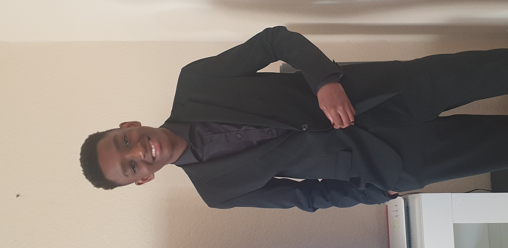
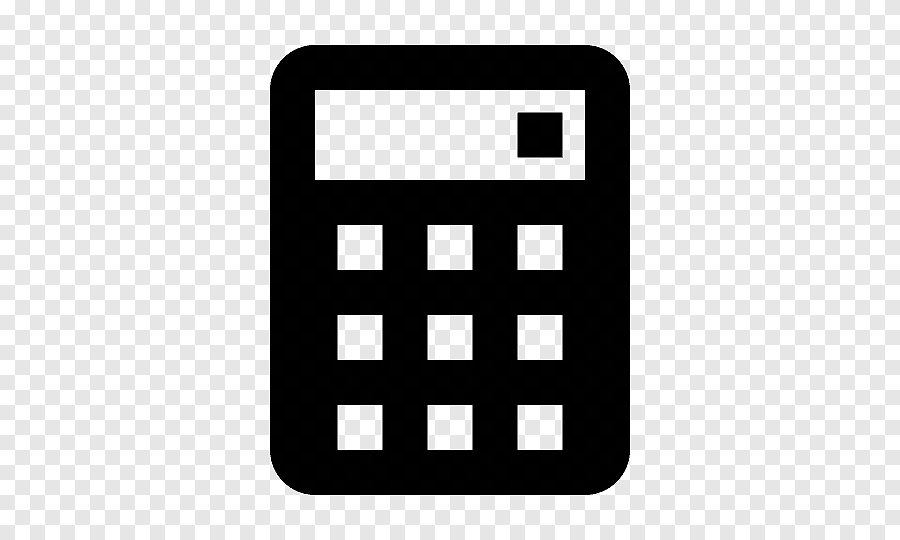

Wilkommen zu meiner allgemeinen Webseite

Mein Name ist Ernesto Daniel, ich bin 15 Jahre alt und lebe in Bremen, einer Stadt, die ich für ihre kulturelle Vielfalt und lebendige Atmosphäre schätze. Ursprünglich wurde ich in Italien geboren, und meine Wurzeln sind ein wichtiger Teil meiner Identität. Sie haben mir nicht nur eine Liebe für gutes Essen und warme Gastfreundschaft mitgegeben, sondern auch einen tiefen Respekt für verschiedene Kulturen und Traditionen. Als ich mit meiner Familie nach Deutschland zog, war es eine spannende Reise, mich an ein neues Umfeld anzupassen. Heute spreche ich sowohl Englisch als auch Deutsch fließend, was mir ermöglicht, mit Menschen aus aller Welt zu kommunizieren und Freundschaften zu schließen.
Meine Schullaufbahn begann an der Osterholzer Grundschule, wo ich nicht nur die Grundlagen meines Wissens erlernte, sondern auch meine ersten Freundschaften in Bremen knüpfte. Momentan besuche ich die Gesamtschule Bremen Ost, an der ich bis 2025 lernen und wachsen werde. Die Schule bietet mir die Möglichkeit, sowohl akademisch als auch persönlich zu reifen. Besonders interessieren mich Fächer wie Musik und Informatik, da sie meine Kreativität und logisches Denken herausfordern.
Eine meiner größten Leidenschaften ist das Schlagzeugspielen. Dieses Instrument ist mehr als nur ein Hobby für mich – es ist ein Weg, meine Gefühle auszudrücken und meine Energie in etwas Positives zu lenken. Es ist faszinierend, wie das Zusammenspiel von Händen, Füßen und Rhythmus dazu beiträgt, einen Raum mit Dynamik und Leben zu füllen. Das Schlagzeugspiel hat mir auch Geduld und Disziplin beigebracht, da es oft stundenlanges Üben erfordert, um die perfekte Technik zu beherrschen. Musik hat eine universelle Sprache, und es erfüllt mich mit Stolz und Freude, ein Teil davon zu sein.
Neben meiner Liebe zur Musik bin ich bekannt für meine Hilfsbereitschaft und Freundlichkeit. Diese Eigenschaften liegen mir besonders am Herzen, da ich fest daran glaube, dass kleine Taten der Freundlichkeit große Auswirkungen haben können. Ob es darum geht, einem Klassenkameraden bei einer schwierigen Aufgabe zu helfen, jemandem zuzuhören, der ein Problem hat, oder einfach ein Lächeln zu schenken – ich bin der Überzeugung, dass solche Momente den Unterschied machen.
Eine weitere Stärke von mir ist meine Fähigkeit, positiv zu bleiben, auch wenn die Dinge manchmal herausfordernd sind. In einer Welt, die oft von Hektik und Stress geprägt ist, versuche ich, anderen ein Gefühl von Ruhe und Unterstützung zu geben. Ich sehe es als meine persönliche Mission, in meinem Umfeld ein bisschen Wärme und Licht zu verbreiten.
Abseits der Schule und Musik verbringe ich gerne Zeit mit meinem Computer. Ich liebe es, neue Technologien zu entdecken und Spiele zu spielen, die strategisches Denken und Kreativität fördern. Ich finde es spannend, wie Technologie unser Leben verbessert und neue Möglichkeiten eröffnet. Gleichzeitig sehe ich sie auch als Werkzeug, um Wissen zu teilen und Verbindungen zu schaffen.
Zusammenfassend lässt sich sagen, dass meine Interessen, Werte und Erfahrungen mich zu der Person machen, die ich heute bin. Ich strebe danach, nicht nur meine Talente weiterzuentwickeln, sondern auch einen positiven Einfluss auf mein Umfeld auszuüben. Jeder Mensch hat etwas Einzigartiges zu bieten, und ich bin stolz darauf, meine Fähigkeiten und Stärken mit anderen zu teilen.
Meine Projekte


Mein eigener Taschenrechner
Ich habe ein Taschenrechner programmiert:)
ein Type speed tester
ich ahbe ein typespeed tester gemacht(noch in arbeit)
.jpg)
Gamehub
Ich ahbe spiele von anderen nutzern hier verlinkt(habe noch niemanden der das hier haben möchte)